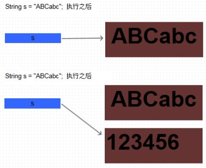
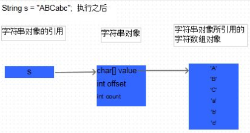
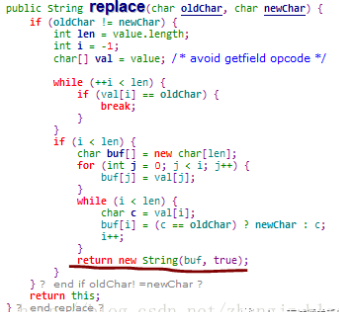

什么是不可变对象？
众所周知， 在Java中， String类是不可变的。那么到底什么是不可变的对象呢？ 可以这样认为：如果一个对象，在它创建完成之后，不能再改变它的状态，那么这个对象就是不可变的。不能改变状态的意思是，不能改变对象内的成员变量，包括基本数据类型的值不能改变，引用类型的变量不能指向其他的对象，引用类型指向的对象的状态也不能改变。
区分对象和对象的引用
对于Java初学者， 对于String是不可变对象总是存有疑惑。看下面代码：
String s = "ABCabc";
System.out.println("s = " + s);
s = "123456";
System.out.println("s = " + s);
打印结果为：
s = ABCabc
s = 123456
首先创建一个 String对象s，然后让s的值为“ABCabc”， 然后又让s的值为“123456”。 从打印结果可以看出，s的值确实改变了。那么怎么还说String对象是不可变的呢？ 其实这里存在一个误区： s只是一个String对象的引用，并不是对象本身。对象在内存中是一块内存区，成员变量越多，这块内存区占的空间越大。引用只是一个4字节的数据，里面存放了它所指向的对象的地址，通过这个地址可以访问对象。
也就是说，s只是一个引用，它指向了一个具体的对象，当s=“123456”; 这句代码执行过之后，又创建了一个新的对象“123456”， 而引用s重新指向了这个心的对象，原来的对象“ABCabc”还在内存中存在，并没有改变。内存结构如下图所示：

Java和C++的一个不同点是， 在Java中不可能直接操作对象本身，所有的对象都由一个引用指向，必须通过这个引用才能访问对象本身，包括获取成员变量的值，改变对象的成员变量，调用对象的方法等。 而在C++中存在引用，对象和指针三个东西，这三个东西都可以访问对象。其实，Java中的引用和C++中的指针在概念上是相似的，他们都是存放的对象在内存中的地址值，只是在Java中，引用丧失了部分灵活性，比如Java中的引用不能像C++中的指针那样进行加减运算。
为什么String对象是不可变的？
要理解String的不可变性，首先看一下String类中都有哪些成员变量。 在JDK1.6中，String的成员变量有以下几个：
public final class String implements java.io.Serializable,Comparable<String>,CharSequence{
/** The value is used for character storage. */
private final char value[];
/** The offset is the first index of the storage that is used. */
private final int offset;
/** The count is the number of characters in the String. */
private final int count;
/** Cache the hash code for the string */
private int hash;//Default to 0
由以上的代码可以看出， 在Java中 String类其实就是对字符数组的封装。
JDK6中， value是String封装的数组， offset是String在这个 value数组中的起始位置， count是String所占的字符的个数。
在JDK7中，只有一个value变量，也就是value中的所有字符都是属于String这个对象的。这个改变不影响本文的讨论。
除此之外还有一个hash成员变量，是该String对象的哈希值的缓存，这个成员变量也和本文的讨论无关。在Java中，数组也是对象。
所以value也只是一个引用，它指向一个真正的数组对象。其实执行了String s = “ABCabc”; 这句代码之后，真正的内存布局应该是这样的：

value，offset和count这三个变量都是private的，并且没有提供setValue， setOffset和setCount等公共方法来修改这些值，所以在String类的外部无法修改String。
也就是说一旦初始化就不能修改， 并且在String类的外部不能访问这三个成员。此外，value，offset和count这三个变量都是final的， 也就是说在String类内部，一旦这三个值初始化了， 也不能被改变。所以可以认为String对象是不可变的了。
那么在String中，明明存在一些方法，调用他们可以得到改变后的值。这些方法包括substring， replace， replaceAll， toLowerCase等。例如如下代码：
String a = "ABCabc";
System.out.println("a = " + a);
a = a.replace('A', 'a');
System.out.println("a = " + a);
打印结果为：
a = ABCabc
a = aBCabc
那么a的值看似改变了，其实也是同样的误区。再次说明， a只是一个引用， 不是真正的字符串对象，在调用a.replace('A', 'a')时， 方法内部创建了一个新的String对象，并把这个新的对象重新赋给了引用a。String中replace方法的源码可以说明问题：

查看其他方法，也都是在 方法内部重新创建新的String对象 ，并且 返回这个新的对象 ， 原来的对象是不会被改变的 。这也是为什么像 replace()， substring()， toLowerCase()等方法都存在返回值的原因。也是为什么像下面这样调用不会改变对象的值：
String ss = "123456";
System.out.println("ss = " + ss);
ss.replace('1', '0');
System.out.println("ss = " + ss);
打印结果：
ss = 123456
ss = 123456
String对象真的不可变吗？
从上文可知String的成员变量是 private final 的，也就是初始化之后不可改变。那么在这几个成员中， value比较特殊，因为他是一个引用变量，而不是真正的对象。value是final修饰的，也就是说final不能再指向其他数组对象，那么我能改变value指向的数组吗？ 比如将数组中的某个位置上的字符变为下划线“_”。 至少在我们自己写的普通代码中不能够做到，因为我们根本不能够访问到这个value引用，更不能通过这个引用去修改数组。
那么用什么方式可以访问私有成员呢？ 没错，用反射， 可以反射出String对象中的value属性， 进而改变通过获得的value引用改变数组的结构。下面是实例代码：
public static void testReflection() throws Exception {
//创建字符串"Hello World"， 并赋给引用s
String s = "Hello World";
System.out.println("s = " + s); //Hello World
//获取String类中的value字段
Field valueFieldOfString = String.class.getDeclaredField("value");
//改变value属性的访问权限
valueFieldOfString.setAccessible(true);
//获取s对象上的value属性的值
char[] value = (char[]) valueFieldOfString.get(s);
//改变value所引用的数组中的第5个字符
value[5] = '_';
System.out.println("s = " + s); //Hello_World
}
打印结果为：
s = Hello World
s = Hello_World
在这个过程中，s始终引用的同一个String对象，但是再反射前后，这个String对象发生了变化， 也就是说， 通过反射是可以修改所谓的“不可变”对象的 。但是一般我们不这么做。
这个反射的实例还可以说明一个问题：如果一个对象，它的成员变量对象实例的状态是可以改变的，那么这个对象很可能不是不可变对象。
例如一个Car对象，它有一个成员变量 Wheel对象，虽然这个Wheel对象声明成了private final 的，但是这个Wheel对象内部的状态可以改变， 那么就不能很好的保证Car对象不可变。